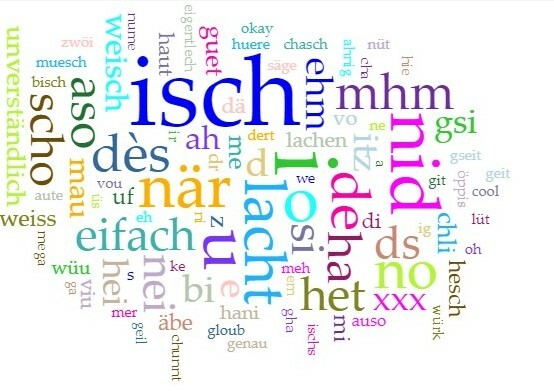

Jugendsprache Schweiz Korpus
Einleitung

Bern WordCloud von allen Transkripten
"Jugendsprachen gelten als vielseitiger und interessanter Forschungsgegenstand in der Linguistik. Sie bilden sich oft in multikulturellen Gesellschaften, die meist Teile urbaner Gebiete sind, heraus. Üblicherweise kommt es zu speziellen jugendsprachlichen Ausprägungen in den sozialen Medien, von denen einzelne Elemente schnell den Weg in die Alltagskommunikation einer ganzen Gesellschaft finden. Jugendsprachliche Merkmale sind auch innerhalb einer einzigen Gesellschaft extrem unterschiedlich und durch starken Wandel charakterisiert. Auer (2002) diskutiert ein Phänomen, dass unter Jugendlichen sehr häufig auftaucht und als Teil des Entstehungsprozesses von Jugendsprache gewertet werden kann. Es handelt sich dabei um die Tendenz, dass auch Jugendliche ohne ethnolektalen Hintergrund Merkmale eines Ethnolekts aufnehmen und in ihrer Alltagssprache verwenden. Gemäss Auer erfolgt diese Entwicklung über drei Stufen, vom Gebrauch des Ethnolekts durch Migrant*innen bis zu dessen Übernahme durch deutschsprachige Jugendliche (De-Ethnisierung). Es ist erstaunlich, dass Forschung zu Jugendsprachen und zu Ethnolekten in der Schweiz nur sehr vereinzelt zu finden ist. Welche tragende Rolle der Jugendsprache als Quelle von Innovation aber auch als Mittel bei der Konstruktion der eigenen sprachlichen Identität und schlussendlich auch bei der Bewahrung historischer Wendungen in den Dialekten zukommt, lässt sich mit Blick auf die viersprachige Schweiz schnell erahnen. Neben den vier offiziellen Sprachen beherbergt die Schweiz eine Reihe verschiedener Migrant*innensprachen, womit das Szenario von Auer (2002), also die De-Ethnisierung, zusätzlich begünstigt wird und sich die Untersuchung dieses Prozesses geradezu aufdrängt. Auer‚ Peter (2003): „‚Türkenslang‘: Ein jugendsprachlicher Ethnolekt des Deutschen und seine Transformationen“. In: Häcki Buhofer, Annelies (ed.): Spracherwerb und Lebensalter. Tübingen/Basel, Francke: 255–264. Das Jugendsprache-Bern-Korpus soll über die nächsten zweieinhalb Jahre (Juni 2019 – Dez. 2021) entstehen, wobei die Daten in der Datenbank abrufbar sind. Wie für soziolinguistische Korpora üblich werden nebst den Aufnahmen in Absprache mit den Sprecher*innen auch ausgewählte Sozialdaten zur Verfügung stehen (z.B. Alter, Geschlecht, Herkunft, Bildungsstand). Teilweise sind auch Transkriptionen zu den vorhandenen Daten geplant, diese entstehen aber erst nach und nach im Rahmen des Projekts. Die erhobenen Daten werden Studierenden für Abschlussarbeiten (Semester- und Masterarbeiten) zur Verfügung stehen. Auch der wissenschaftliche Nachwuchs wird durch das neue Korpus einfacher zu Phänomenen in der Jugendsprache forschen können (Dissertationen und Habilitationen)."
Christa Schneider, Dave Brittan, Tobias Hodel, Dominique Hess, & Anna Linder. (2021). JuBe - Jugendsprache Schweiz Korpus (1.0) [Data set]. Zenodo. https://doi.org/10.5281/zenodo.5648157